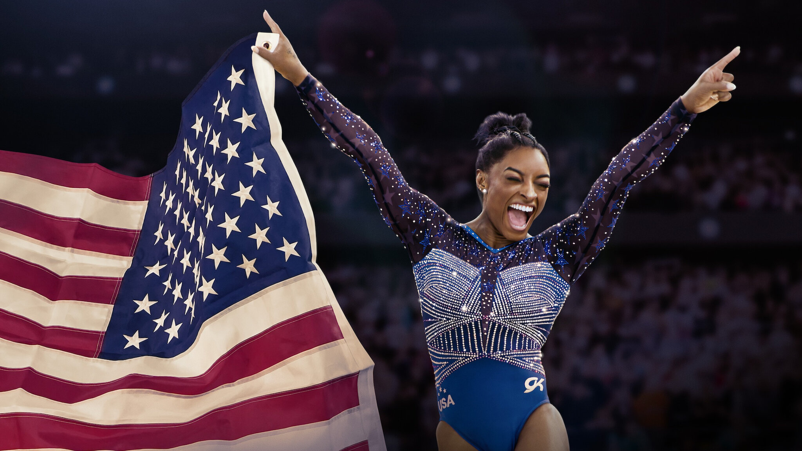
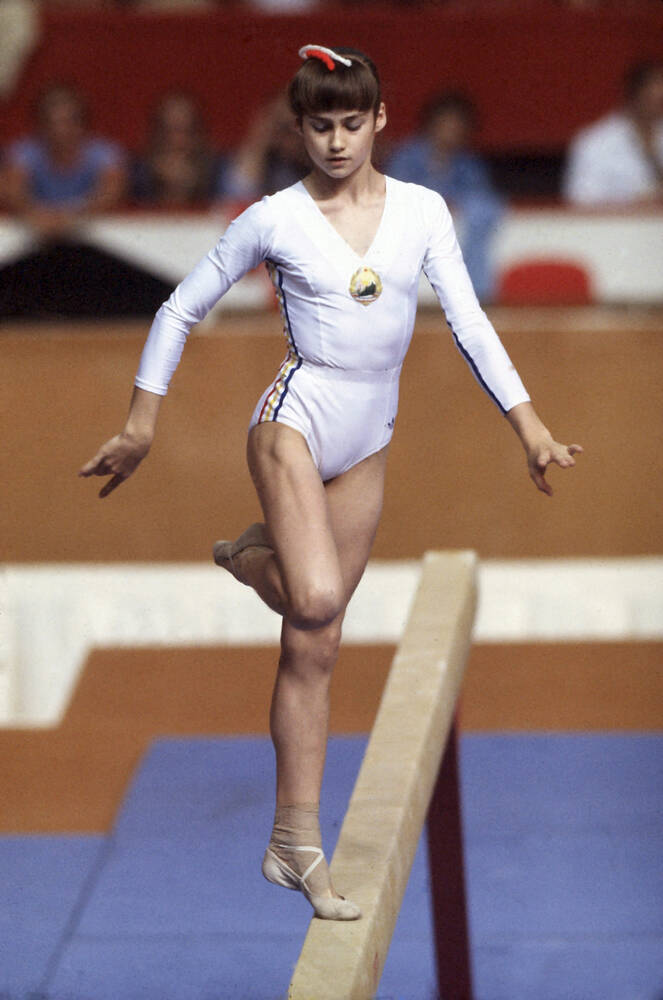
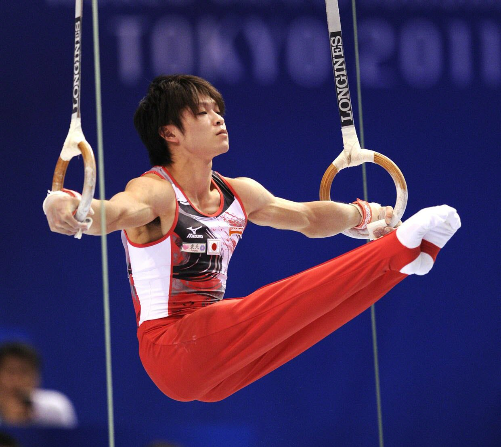

Les légendes qui ont marqué l'histoire du sport

Gymnaste américaine considérée comme l'une des meilleures de l'histoire. Elle a remporté de nombreuses médailles aux Jeux Olympiques et aux championnats du monde.
Voir sur Wikipedia →
Gymnaste roumaine célèbre pour avoir obtenu la première note parfaite de 10 aux Jeux Olympiques de Montréal en 1976.
Voir sur Wikipedia →
Gymnaste japonais très célèbre, champion olympique et multiple champion du monde, surnommé « King » pour sa domination absolue du sport.
Voir sur Wikipedia →